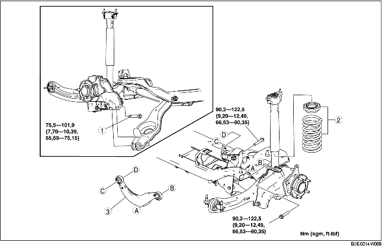

1. Verwijder de rijniveausensor achter. (Zie VERWIJDEREN/PLAATSEN RIJNIVEAUSENSOR.)
2. Verwijder de onderdelen in de aangegeven volgorde, zie de tabel.
3. Plaats de onderdelen in omgekeerde volgorde.
4. Controleer de wieluitlijning en corrigeer deze indien nodig.
(Zie ACHTERWIELUITLIJNING.)

.
1. Ondersteun de onderste draagarm achter met een krik.
2. Draai de binnenste bout van de onderste draagarm achter los.
3. Verwijder de buitenste bout van de onderste draagarm achter.
1. Plaats de bovenste draagarm achter zo dat het merkteken IN naar de binnenzijde van de auto wijst.